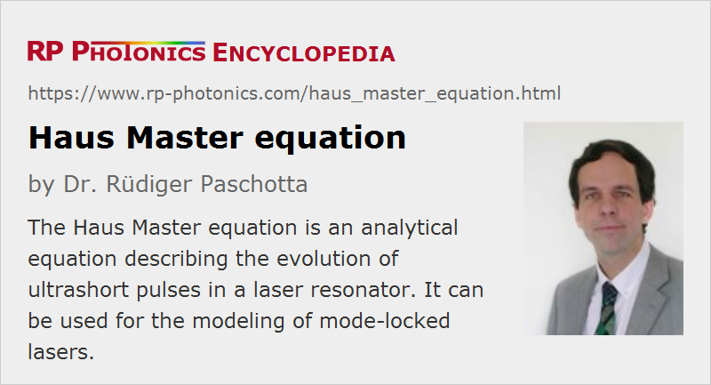

Haus Master Equation
Definition: an analytical equation describing the evolution of ultrashort pulses in a laser resonator
Categories: light pulses, methods
How to cite the article; suggest additional literature
Author: Dr. Rüdiger Paschotta
The Master equation as introduced by Hermann A. Haus [1] is the central piece of a physical model which can be used to describe the pulse evolution in the resonator of a mode-locked laser. The basic ideas underlying the model are the following:
- The pulse circulating in the laser resonator is described in the time domain with a complex amplitude A(t). Note that this function describes a single pulse, not a pulse train, and applies to a certain position within the resonator (e.g. just before the output coupler). The amplitudes are usually normalized so that the squared modulus of A(t) is either the optical power or the optical intensity in the gain medium.
- The changes ΔA(t) of this function within a single resonator round trip are then calculated. Such changes can be caused by laser gain (with a finite gain bandwidth), optical losses (with a time dependence introduced by an optical modulator for active mode locking or a saturable absorber for passive mode locking), chromatic dispersion and optical nonlinearities (e.g. the Kerr effect). Of course, it depends on the considered situation which of these effects are relevant. Note that the overall time delay corresponding to the resonator round-trip time is not considered, so that the pulse typically remains centered near t = 0.
- In a first step, amplitudes Aj(t) may be considered, where j indicates the number of resonator round trips. The index j is then replaced with a second time variable T = j Trt, where Trt is the resonator round-trip time. This leads to a function A(T,t).
- Finally, T is considered as a continuous variable, the evolution of which is described with a differential equation. If the combined changes of the amplitude per round trip are ΔA, the resulting Master equation is of the form
As an example, consider the case of an actively mode-locked laser with intracavity dispersion and a Kerr nonlinearity. In that case, the Haus Master equation reads
where the terms on the right-hand side describe (in that order) the constant part of the laser gain, the frequency dependence of the gain and the second-order dispersion, the resonator losses, the time-dependent modulator loss (approximated for small time arguments), and the Kerr nonlinearity. This is a generalized Landau–Ginzberg equation. The Master equation can be seen as a generalization of the nonlinear Schrödinger equation, as is often used for the study of soliton pulse phenomena.
Approximations
It is important to recognize which kind of approximations are usually required:
- The changes of the pulse profile per resonator round trip must be small. This condition is well satisfied for many but not all mode-locked lasers. In particular, it is problematic for lasers generating few-cycle pulses (e.g. titanium–sapphire lasers), where the pulse parameters usually undergo large changes within a single resonator round trip, and the order of optical components matters.
- The considered terms should usually not be too complicated, as otherwise it may not be possible to find analytical solutions (see below). For example, it is common to omit terms for higher-order dispersion (which would introduce third or higher order temporal derivatives), to neglect Raman scattering, to assume weak saturation of absorbers, etc.
Applications
In not too complicated situations, analytical solutions of the Haus Master equation are known for the steady state (as reached after many resonator round trips). For example, this is the case for the actively mode-locked laser without dispersion and nonlinearities. The result is that the pulse shape is Gaussian, and the calculated pulse duration exactly agrees with that of the earlier Kuizenga–Siegman theory. There are also higher-order solutions described with Hermite–Gaussian functions, but these experience lower net gains per resonator round trip, and are thus not observed.
In more difficult cases, approximated results can be obtained by using a simple ansatz for the function A(t), e.g. corresponding to sech2-shaped pulses (possibly with a chirp). This leads to equations which allow one e.g. to calculate pulse duration, chirp, and spectral bandwidth as functions of the laser parameters.
In still more complicated cases, analytical solutions usually require approximations, the validity conditions of which are often not well satisfied in realistic situations. In particular, the time-dependent loss caused by a slow saturable absorber is difficult to treat, as it depends on the optical intensity at earlier times and thus introduces an integral on the right-hand side of the Haus Master equation. Another issue is the stability of solutions; there are cases where the theoretical solution is dynamically unstable and can thus never be observed in practice. For these reasons, numerical algorithms are often used to calculate the steady-state pulse profile. However, this approach removes the ability to obtain analytical equations as results, which can be more helpful in recognizing relations between parameters. There is then usually no more advantage over using straightforward pulse propagation models, which are less dependent on various approximations (see above), and thus able to describe reliably a wider range of phenomena. Also, such models are not more complex to implement and validate.
Another use of the Master equation is to derive dynamic equations (coupled differential equations) for a limited number of pulse parameters, such as pulse energy, duration, chirp, and temporal position, using the moment method [4]. The emphasis is then not necessarily on the steady state, but on the evolution of pulse parameters, which can be used, e.g., to investigate noise properties.
In conclusion, the Haus Master equation can be considered as a useful tool mainly for the study of simple situations, where analytical solutions can be obtained, and as the basis of some dynamic models, whereas simple pulse propagation models (treating different effects on the pulses sequentially) are usually more appropriate for more complex situations, particularly for passively mode-locked lasers.
Questions and Comments from Users
Here you can submit questions and comments. As far as they get accepted by the author, they will appear above this paragraph together with the author’s answer. The author will decide on acceptance based on certain criteria. Essentially, the issue must be of sufficiently broad interest.
Please do not enter personal data here; we would otherwise delete it soon. (See also our privacy declaration.) If you wish to receive personal feedback or consultancy from the author, please contact him e.g. via e-mail.
By submitting the information, you give your consent to the potential publication of your inputs on our website according to our rules. (If you later retract your consent, we will delete those inputs.) As your inputs are first reviewed by the author, they may be published with some delay.
Bibliography
| [1] | H. A. Haus et al., “Structures for additive pulse mode locking”, J. Opt. Soc. Am. B 8 (10), 2068 (1991), doi:10.1364/JOSAB.8.002068 |
| [2] | A. M. Dunlop et al., “Pulse shapes and stability in Kerr and active mode-Locking (KAML)”, Opt. Express 2 (5), 204 (1998), doi:10.1364/OE.2.000204 (extended equations, including the transverse spatial dimensions) |
| [3] | H. A. Haus, “Mode-locking of lasers”, J. Sel. Top. Quantum Electron. 6 (6), 1173 (2000), doi:10.1109/2944.902165 |
| [4] | N. G. Usechak and G. P. Agrawal, “Rate-equation approach for frequency-modulation mode locking using the moment method”, J. Opt. Soc. Am. B 22 (12), 2570 (2005), doi:10.1364/JOSAB.22.002570 |
See also: pulse propagation modeling, mode locking, ultrashort pulses, Kuizenga–Siegman theory
and other articles in the categories light pulses, methods
|  |
If you like this page, please share the link with your friends and colleagues, e.g. via social media:
These sharing buttons are implemented in a privacy-friendly way!